A more real life
Working with our hands, getting muddy, depending on the weather. Getting back to what is concrete and learning from it.
Organic farm in Castile, Spain
A small farm in Castile where we try to live differently: with our feet on the ground, close to creation, in community and with time for God.
Why we exist
Ora et Labora was born of a personal search. We wanted a life more rooted in reality, where the day is set by the sun, the seasons and what the land asks of us, not just by screens and hurry.
We found it in the Castilian countryside. Working the land teaches things that cannot be learned any other way. Everything takes its time. We are not in control of everything. What we receive is a gift.
The name comes from the motto that sums up the tradition of Saint Benedict: to pray and to work, without separating one from the other. That is what we want to live each day.
Seeking goodness, beauty and truth in the small things of every day.
Harmonia
Visitors are often struck by how well the animals get on here: the dogs with the cats, the cats with the chicks, the ruminants with the birds, the big with the smallest. Each has its place, its care and its time, and they live together in peace. We see the same when friends and families of very different ages, backgrounds and paths come to visit: around the table or at a celebration, everyone feels at ease.
That harmony is like the ground note of the farm, the one that holds up every other melody: work, study, the table and prayer. For us it is also a reflection of creation as it came from the hands of God, when everything “was very good”, and a foretaste of the peace the prophets announce.
The wolf shall dwell with the lamb, the leopard shall lie down with the kid, and a little child shall lead them.
What moves us
Working with our hands, getting muddy, depending on the weather. Getting back to what is concrete and learning from it.
We farm organically and look after our animals because the land is the work of God and we are only its stewards. We care for it with respect and want to leave it better for those who come after us.
A farm cannot stand on its own. We want it to be a meeting place for families and friends, where the table, the work and the celebrations are shared.
Prayer gives meaning to work, and work makes prayer more genuine. We want every day to have its time for silence and for meeting God.
Studium
In the Benedictine tradition, the work of the hands never stood alone. It went together with study: monasteries were schools of agriculture, keepers of history and houses of the Word.
We want to follow that path. We study with a scientific eye, observing, measuring and testing, because faith does not fear reason. Knowing creation well is another way of caring for it and giving thanks for it.
Great are the works of the Lord, studied by all who delight in them.
Magna opera Domini, exquisita in omnes voluntates eius.
Soil, plants, animals, water and climate. We want to understand how the land we work really works, learning both from today’s agronomy and from the wisdom of the farmers of old.
Where we come from: the history of the Castilian countryside, its villages and its faith. Knowing the past helps us understand the present and not start from scratch.
We read and study Holy Scripture unhurriedly, guided by the Christian tradition, so that it does not stay on the page but reaches everyday life.
Used well, technology frees up time and helps us care for the land better. We study tools and technologies, from mechanics to computing, to put them at the service of people and not the other way round.
We pay special attention to artificial intelligence. We see it as a fruit of the intelligence God has given us, but not as something neutral. We want to understand it in depth so as to use it wisely, without letting it take the place of our own judgement, of work well done or of real human contact.
Life here
They are the great protagonists of the farm. Every day begins and ends with them: feeding and watering them, cleaning, caring for them and keeping an eye on each one. They teach us perseverance and remind us that caring is a way of loving.
We grow seasonal vegetables unhurriedly and with care, following what each season asks of us.
Sowing, tending, waiting and harvesting. The farming year teaches us patience and gives us back a sense of time.
Throughout the year we gather families and friends to eat together, pray and celebrate.
In the workshop we mend what breaks and make with our own hands what the farm needs. Carpentry and blacksmithing have a special place: working with wood and iron calls for patience, precision and respect for the material. And it reminds us that Jesus spent much of his life in a carpenter’s workshop, beside Saint Joseph.
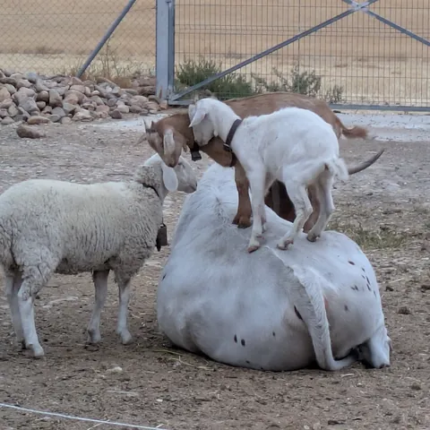
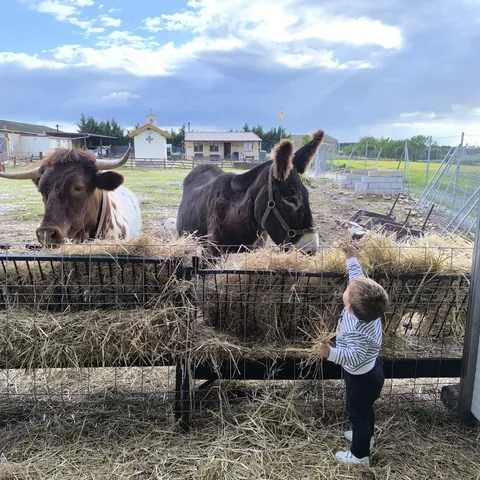
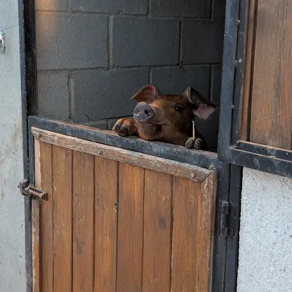
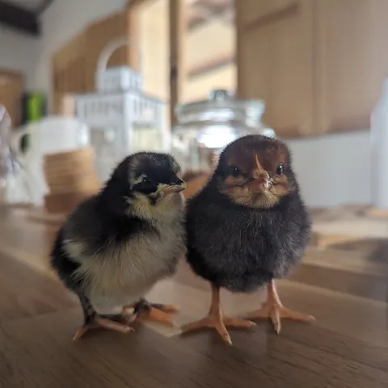
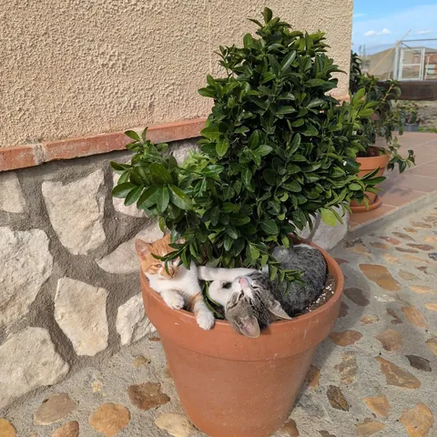
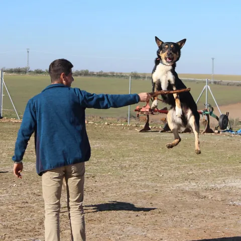
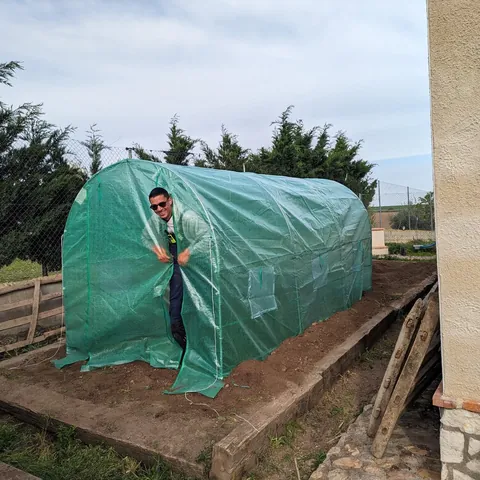
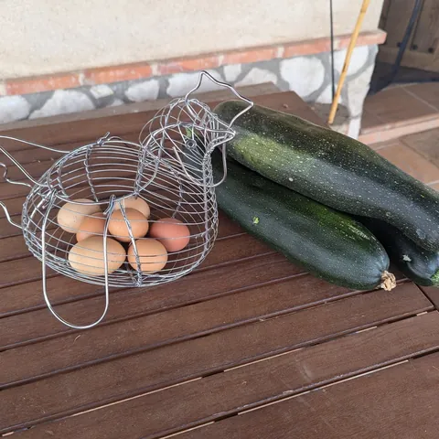
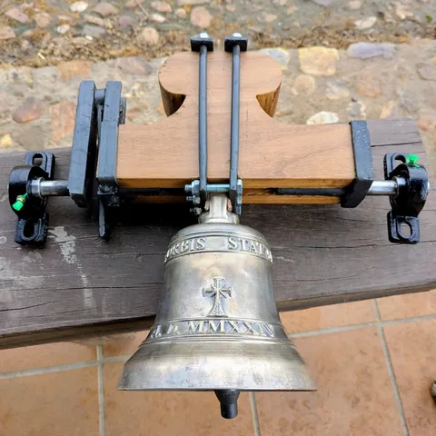
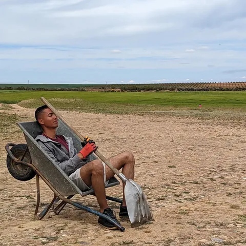
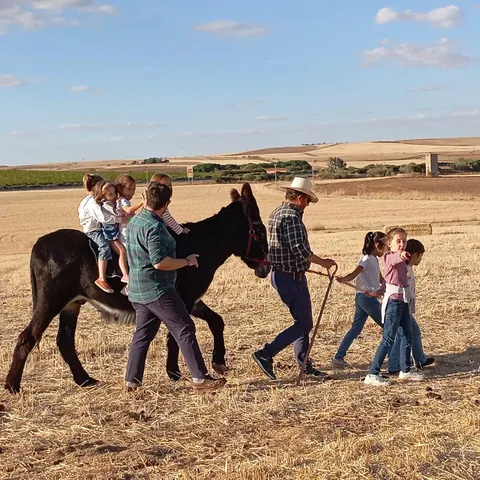
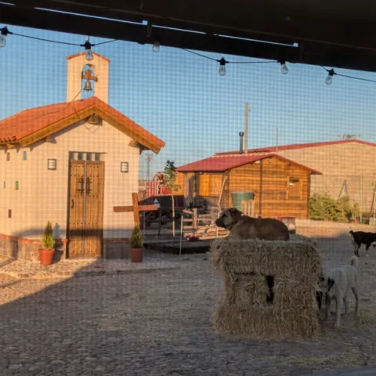
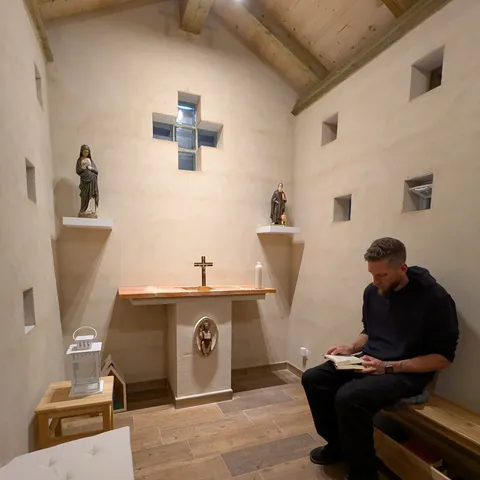

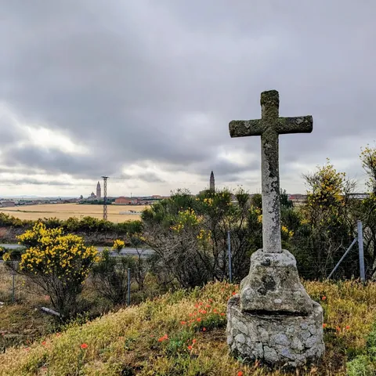
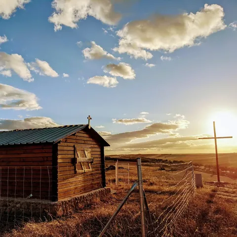
The animals, the garden, the fields and the celebrations: we keep sharing photos of the farm on Instagram.
For now we do not sell products or offer services. This website is simply to share who we are and how we live.
Write to us
If what you have read speaks to you, leave us a message. We will reply unhurriedly, the way things are done here.